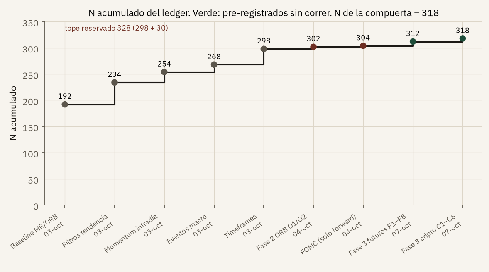
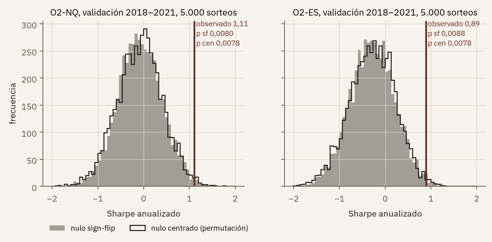
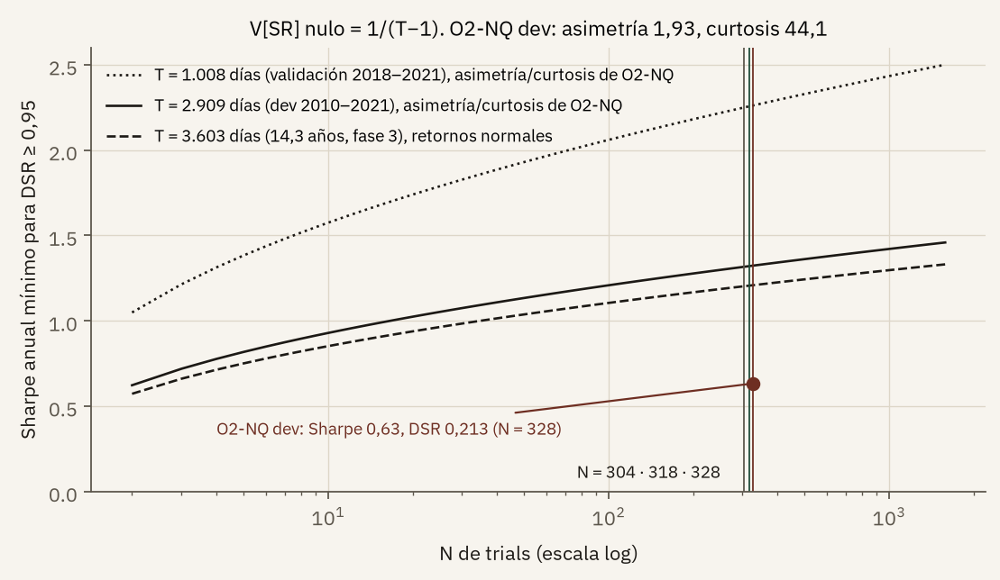
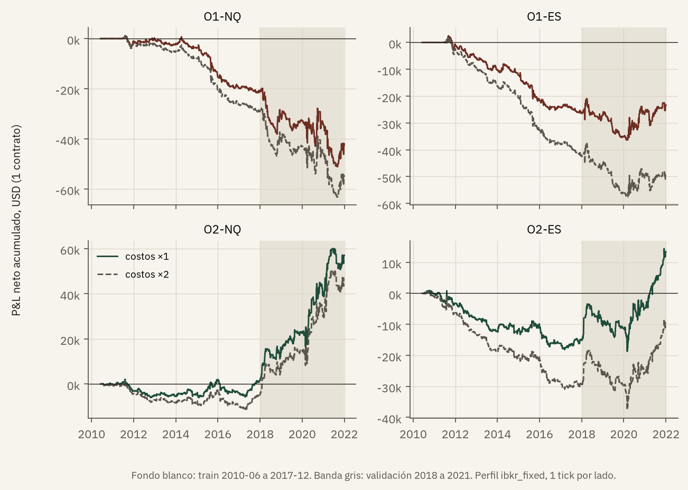
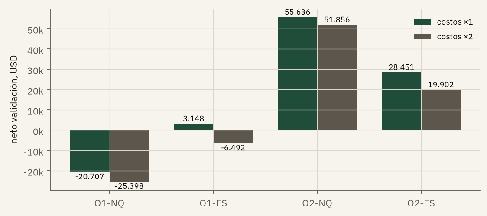
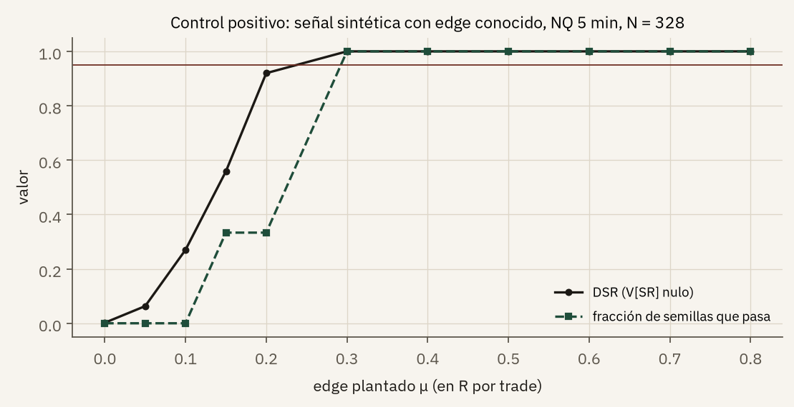
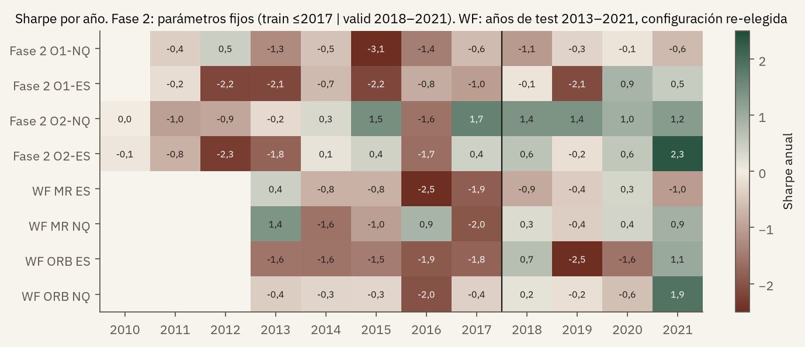
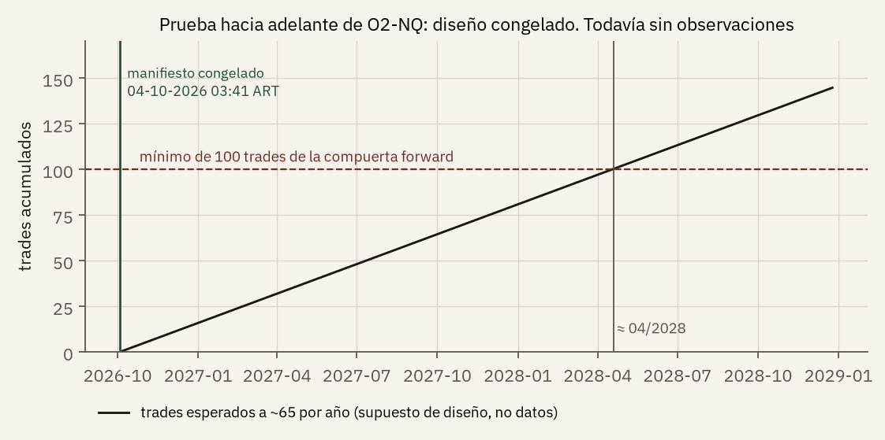
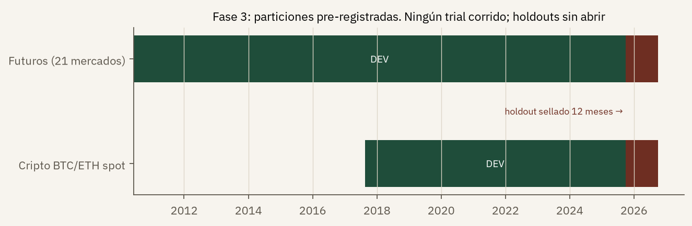

Informe de investigación para revisión académica
¿Hay un edge intradía en futuros de índices de Estados Unidos, una vez descontado el azar de haber probado muchas estrategias?
Qué se pide que se revise. El protocolo, las fuentes y la conclusión negativa. No se pide autorización para operar, ni se afirma que una estrategia sea rentable, ni se presenta este texto como una recomendación de inversión.
1. Resumen
Entre el 3 y el 8 de octubre de 2026 se buscó un resultado que no se explique por azar ni por haber elegido, después de mirar los datos, la variante que quedó mejor. El universo son futuros sobre índices de Estados Unidos, en el CME Globex: el E-mini S&P 500 (ES), el E-mini Nasdaq-100 (NQ) y sus micros (MES, MNQ).
Se corrieron 302 configuraciones que cuentan para el presupuesto de pruebas. Ninguna pasó el criterio escrito en las notas: un Deflated Sharpe Ratio de al menos 0,95 y un resultado de entrenamiento que no contradiga al de validación. La variante menos mala, llamada O2 sobre NQ, gana en la ventana 2018–2021 (Sharpe 1,11, cerca de 213 dólares por trade) y aun así queda afuera: su Deflated Sharpe es 0,213 y en 2010–2017 el Sharpe es 0,06. Quedó congelada en una prueba hacia adelante, en papel, desde el 5 de octubre de 2026. No tiene plata asignada. Con unos 65 trades por año, un veredicto con muestra suficiente tarda cerca de un año y medio.
Una tercera fase, de tendencia más carry sobre futuros, está pre-registrada desde el 7 de octubre y no se corrió.
2. Pregunta y alcance
La pregunta de la línea principal es estrecha a propósito. No es “¿conviene invertir en índices?”. Es: ¿alguna regla intradía, definida antes de mirar el tramo de validación, gana después de costos lo bastante como para que el resultado no sea el premio de haber probado cientos de reglas?
La respuesta que este informe sostiene es no, en el conjunto que ya se corrió. Esa frase es el resultado. No es una falla del informe.
Queda fuera, y se dice para que no se lea de más:
- No se evalúa una cuenta fondeada de Apex Trader Funding. Sus reglas vigentes prohíben la automatización y el bracket trading no direccional, y exigen estar flat antes de las 16:59 ET. Una simulación previa de la probabilidad de pasar una cuenta de 50.000 dólares no se distinguía de una estrategia sin edge. Apex no entra en el diseño.
- No se elige broker en este texto. El modelo de costos usa un perfil llamado ibkr_fixed como referencia de investigación. La habilitación real de una cuenta y el tratamiento impositivo no forman parte del estudio.
- No se publican claves, saldos de proveedores de datos ni el motor de backtest. Se publican las definiciones, las fuentes y los veredictos.
3. Por qué el Sharpe solo no alcanza
El ratio de Sharpe mide exceso de retorno por unidad de volatilidad (Sharpe, 1994). En un backtest sirve como descripción. No sirve como prueba si uno se queda con la mejor de muchas pruebas. Bailey, Borwein, López de Prado y Zhu (2014) muestran que, con relativamente pocas configuraciones, es fácil fabricar un historial que se ve bien y no se repite. Bailey y López de Prado (2014) proponen el Deflated Sharpe Ratio: una probabilidad de que el Sharpe observado siga siendo positivo después de corregir por la cantidad de intentos y por rendimientos que no son normales.
En estas notas el umbral de aceptación es 0,95. Por debajo de eso, el resultado se archiva como no pasa, aunque el Sharpe de una ventana sea alto. O2-NQ es el ejemplo: Sharpe de validación 1,11 y Deflated Sharpe 0,213.
El otro control es temporal. Entrenar, validar y recién después mirar un holdout no arregla nada si el holdout ya se usó para descartar ideas. En este proyecto el tramo desde 2022 ya se miró. No puede citarse como confirmación limpia. Lo máximo que el historial podría haber dicho, si alguna regla hubiera pasado, es “pasa en la historia, pendiente de una prueba hacia adelante”. Ninguna llegó ahí.
4. Datos
La fuente de precios es Databento, dataset GLBX.MDP3, barras de un minuto, contrato continuo .v.0. ES y NQ desde junio de 2010. MES y MNQ desde mayo de 2019. La nota de trabajo registra un costo de descarga histórica de 61,19 dólares.
El contrato continuo no se tomó como verdad cerrada. Como parte de la validación de datos se aplicó un control de roll en dos pasos. Primero, el gap de cada roll se identifica por la fecha de roll y no por el código del contrato (los códigos de vencimiento repiten el dígito del año cada diez años; con búsqueda por código, 26 de los 66 rolls desde 2020 tomaban el gap de un roll diez años anterior). Si la fila de esa fecha no es única, la corrida se detiene. Segundo, como control de anticipación, el gap se mide con el cierre del día hábil anterior al roll y no con la barra diaria del día del roll, que cierra a las 20:00 ET, después de la apertura de las 09:30. Las dos reglas se escribieron en addenda con hash SHA-256 antes de recalcular. Con la regla estricta, el gap se mueve en 43 de 47 rolls de NQ y en 38 de 47 de ES dentro de 2010–2021, con diferencias chicas. Ningún día de roll cruza el umbral de O2 (el margen mínimo fue de 0,84 puntos en NQ y 0,44 en ES), el signo del gap no cambia en ningún día elegible, y no cambió ni un veredicto ni un trade de las cuatro variantes de la fase 2: los archivos diarios y de compuertas son idénticos en las 14 corridas.
Queda una limitación escrita, sin un tercer parche: en 97 rolls que cayeron en lunes, todos entre 2010 y 2022, la barra estricta es la del domingo y tiene poco volumen. Desde 2022 el continuo .v.0 rola miércoles o jueves. El recolector de la prueba hacia adelante anota un aviso, y no frena, si esa barra cae en fin de semana, trae menos de 1.000 contratos en alguna pata o queda a más de un día hábil del roll.
La prueba hacia adelante usa la misma fuente, Databento .v.0, y no Yahoo Finance. Yahoo Finance queda solo como control cruzado. No se bajan sesiones parciales ni nada anterior al 5 de octubre de 2026. El costo cotizado para los cuatro contratos es de cerca de 0,10 dólares por semana. La rutina es los lunes a las 08:47, hora de Argentina. La próxima ventana, al escribir esto, es el lunes 12 de octubre.
5. Costos que entran en el resultado
Una estrategia que gana antes de costos y pierde después no es un edge. El perfil ibkr_fixed carga, por ida y vuelta, 4,48 dólares en ES y NQ y 1,22 dólares en MES y MNQ. Esa cifra junta comisión, fee de CME para no miembro y tasa NFA, más un tick de slippage por lado. Desde el 1 de julio de 2027 la nota prevé que la NFA suba y el ida y vuelta pase a 4,50 y 1,24 (ibkr_fixed_nfa2027). Son supuestos de investigación, no una constancia vigente del broker.
Las corridas con el doble de costos y las corridas en micros se usan como prueba de robustez. No suman al contador de trials. En la fase 3, todavía sin correr, los fees de CBOT, NYMEX y COMEX figuran como verificados en la nota de trabajo. Los micro de 2, 5 y 30 años quedan marcados como no ejecutables por liquidez.
6. Protocolo
El banco aplica dos familias de compuertas, F1–F2 y G1–G8. Este informe no reproduce el código de cada compuerta. Sí reproduce lo que las notas dicen que esas compuertas miran: ventaja contra dos nulos, Sharpe, Deflated Sharpe con la cantidad de trials, costos al doble, walk-forward, una meseta de parámetros vecinos, cantidad de trades y un chequeo de anticipación.
Los dos nulos son concretos. Uno da vuelta el signo del resultado bruto y vuelve a restar costos. El otro permuta de forma centrada. Si la regla no le gana a esos dos, el patrón encontrado no se distingue de reordenar el mismo resultado.
Cada corrida que cuenta entra en un ledger. El Deflated Sharpe de la fase 2 usa un tope conservador N = 328: los 298 trials de la fase 0 más una reserva de 30 trials nuevos fijada antes de correr la fase 2. La reserva no son trials corridos. El ledger lo reconcilia en una fila del 7 de octubre: con corrida histórica van 302 (298 + 4 variantes ORB de la fase 2); con las dos reglas FOMC pre-registradas solo para la prueba hacia adelante, el N real es 304, y de la reserva de 30 quedan 24 (30 − 6). La fase 3 pre-registra 14 trials más (8 de futuros y 6 de cripto), todavía sin correr, y fija el N de su compuerta en 304 + 14 = 318, que es el cumulative_N de la última fila del ledger. Usar 328 para la fase 2 es más exigente que usar 304: con cualquiera de los dos, O2-NQ queda lejos de 0,95.
Las reglas nuevas se congelan con un hash SHA-256 antes de ver datos nuevos. La fase 2 hacia adelante tiene un manifiesto congelado el 4 de octubre a las 03:45, hora de Argentina, antes de la primera sesión del día 5. La fase 3 tiene un pre-registro v2.2 del 7 de octubre, con prefijo de hash 79b893be. Publicar el prefijo no reemplaza al archivo. Sirve para que una revisión pida el archivo y compruebe que no se reescribió después de mirar el resultado.
Las particiones son:
| Tramo | Fechas | Estado al 8 de octubre de 2026 |
|---|---|---|
| Train | junio de 2010 a diciembre de 2017 | Usado para construir |
| Valid | 2018 a 2021 | Ya mirado. No se puede volver a usar como sorpresa |
| Holdout | 2022 en adelante | Ya usado. No es un test limpio |
| Forward | desde el 5 de octubre de 2026 | Única ventana todavía no gastada. Solo O2, sin plata |
6.1 Inventario de todas las pruebas
La tabla 1c lista todas las familias que entraron en el ledger, en orden cronológico, con el mejor resultado de cada una según su propio archivo de resultados y el N con que se calculó su Deflated Sharpe. Las corridas que no suman trials (auditorías, costos al doble, micros, controles del banco) figuran aparte, para que se vea qué se miró sin agrandar el N.
| Fecha | Familia | Trials | N acum. | Mejor Sharpe (dónde) | DSR (N usado) | Veredicto |
|---|---|---|---|---|---|---|
| 3 oct | Fase 0. Reversión al VWAP y ruptura de apertura (ORB), grillas en 5 min, 4 contratos | 192 | 192 | ORB MNQ 0,46 IS (NQ 0,16) | 0,17 (N = 192); NQ 0,12 | No pasa |
| 3 oct | Fase 0. Filtros de tendencia y volatilidad sobre ORB en NQ | 42 | 234 | ORB60 + trailing 2R + vol baja, 0,51 IS | 0,40 (N = 234) | No pasa |
| 3 oct | Fase 0. Momentum intradía de las últimas medias horas, V1–V10 en ES y NQ | 20 | 254 | V8 (r_12 con vol alta) NQ 0,32 IS; MNQ 0,53 | ≈ 0 (N = 254); MNQ 0,046 | No pasa |
| 3 oct | Fase 0. Eventos macro (FOMC, BLS) | 14 | 268 | ORB15 en días CPI/NFP, ES 0,18 IS | 0,035 (N = 268) | No pasa |
| 3 oct | Fase 0. Reversión y ORB en barras de 15, 30 y 60 min | 30 | 298 | ORB60_or2 NQ 0,17 IS; MNQ 0,47 | ≈ 0 (N = 298); MNQ 0,04 | No pasa |
| 4 oct | Auditoría de fases 0 y 1: ejecución y costos (192 corridas), simulación de cuenta de evaluación (68), diagnósticos (5), perfil de costos (1) | 0 | 298 | Sin parámetros nuevos | — | Conclusiones sin cambio |
| 4 oct | Fase 2. O1 y O2 en NQ y ES, pre-registradas | 4 | 302 | O2-NQ 1,11 en validación | 0,213 (N = 328) | No pasa |
| 4 oct | Fase 2. FOMC F-ES y F-NQ, solo hacia adelante, sin corrida histórica | 2 | 304 | Sin resultado (no se corre sobre la historia) | — | Pendiente |
| 4 oct | Diagnósticos de fase 2: costos ×2 (4), micros (4), validación de roll en dos pasos, ejemplos de ORB60 NQ y reversión ES, control positivo y 50 nulos | 0 | 304 | Tabla 2c y sección 8.2 | — | No cambian veredictos |
| 7 oct | Fase 3. Tendencia + carry, futuros F1–F8 y cripto C1–C6, pre-registrados | 14 | 318 | No corrida | — | Sin resultado |
“IS” es in-sample (2010–2021, o 2019–2021 en micros). Los Sharpe son anualizados, netos de costos y con un tick de slippage por lado. Fuente: ledger de trials y archivos de resultados de cada estudio. La suma 192 + 42 + 20 + 14 + 30 + 4 + 2 + 14 = 318 es el cumulative_N de la última fila del ledger.

Puntos grises: fase 0. Rojo oscuro: fase 2 (con y sin corrida histórica). Verde: fase 3, pre-registrada y sin correr. La línea punteada es la reserva de 30 trials fijada antes de la fase 2; no son trials corridos.
7. Fase 0, el barrido
El 3 de octubre se corrieron cinco estudios y 298 trials: 192 de baseline (reversión a la media contra el VWAP, más rupturas de rango de apertura), 42 filtros de tendencia, 20 de momentum intradía, 14 de eventos macro y 30 de timeframes. 192 + 42 + 20 + 14 + 30 = 298.
El veredicto de conjunto es que no apareció un edge intradía robusto. La reversión al VWAP no tiene edge bruto y pierde en el holdout. La ruptura de rango de apertura en ES y MES pierde dentro de la muestra. La menos mala, ORB60 en NQ y MNQ, depende del régimen de 2018 y 2021 y tiene un Deflated Sharpe lejos de 0,95. Una combinación de las dos familias, llamada COMBO en las notas, tampoco pasa.
El 4 de octubre se auditó la fase 0 y la fase 1. La auditoría revisó el modelo de ejecución y de costos, y tres controles de implementación: la construcción del nulo de cambio de signo (que debe invertir el resultado bruto y recién después restar costos), el orden de los eventos dentro de la barra en el COMBO, y el tratamiento del gap en la ruptura de apertura. Las conclusiones no cambiaron. Esas revisiones sumaron cero trials. Una reproducción independiente cerró 18 de 18 archivos de auditoría y 96 de 96 archivos de trades, byte a byte. “Pasa” acá quiere decir que la reproducción cierra. No quiere decir que la estrategia gane.
El resumen de baseline, in-sample, con un tick, muestra el punto de partida. Son los parámetros de referencia del archivo (k2.0_s1.0_t60 y or30), no los elegidos de la fase 2. Ocho filas. Siete pierden. La única con Sharpe positivo es el ORB de MNQ, en 0,22, y no es un pase.
| Contrato | Regla | Trades | Aciertos | Neto | Sharpe |
|---|---|---|---|---|---|
| ES | MR k2.0 | 4.639 | 29,4% | −139.243,5 | −2,84 |
| ES | ORB or30 | 3.660 | 41,4% | −143.677,5 | −1,05 |
| NQ | MR k2.0 | 4.397 | 34,5% | −60.093 | −0,74 |
| NQ | ORB or30 | 3.528 | 45,0% | −11.277 | −0,06 |
| MES | MR k2.0 | 1.102 | 32,8% | −4.495,5 | −2,25 |
| MES | ORB or30 | 844 | 43,8% | −4.672,2 | −0,92 |
| MNQ | MR k2.0 | 1.041 | 36,2% | −2.419 | −0,74 |
| MNQ | ORB or30 | 791 | 49,7% | +1.761 | 0,22 |
Las figuras de barras de este informe son esas cifras, dibujadas. Las figuras de imagen (curvas de capital, nulos, mapa por año) se generaron a partir de los archivos diarios de las mismas corridas, sin agregar configuraciones ni días que el archivo no tenga.
8. Fase 2, cuatro reglas escritas antes
La fase 2 no es otro barrido. Son cuatro trials pre-registrados. Los identificadores de parámetros en los CSV distinguen un ORB de baseline or30 de un ORB elegido or60. La definición que usa el veredicto, en prosa, es esta:
- O1. ORB60 de los dos lados, solo cuando el rango de apertura dividido por el ATR de 14 días cae en el tercil bajo.
- O2. ORB60 de un solo lado, a favor de un gap de apertura de al menos 0,3 veces ese ATR.
Cada una se corre en NQ y en ES. Las cuatro no pasan. La reproducción independiente de esta fase cerró 84 de 84 archivos, también byte a byte, y confirmó los cuatro veredictos.
| Variante | Valid 2018–2021 | Train 2010–2017 | DSR | Por qué no pasa |
|---|---|---|---|---|
| O1-NQ | −63,9 USD por trade. Sharpe −0,45 | Negativo. Sharpe −1,09 en el CSV | No se informa un pase | Negativa en los dos tramos |
| O1-ES | +9,6 USD por trade. Sharpe 0,11 | Negativo. Sharpe −1,21 en el CSV | No se informa un pase | Sin edge. El Sharpe de validación sale de 2020–2021 |
| O2-NQ | +213,2 USD por trade. Sharpe 1,11. p ≈ 0,008 (p de un solo test, sin corregir por N; la corrección es el Deflated Sharpe) | Plano. Sharpe 0,06 | 0,213 | Lejos de 0,95. La ganancia se concentra en largos y en alta volatilidad |
| O2-ES | +98,1 USD por trade. Sharpe 0,89 | Negativo. Sharpe −0,63 | 0,013 | El entrenamiento va al revés |
El CSV de resumen, con el mismo perfil y sin duplicar la corrida de costos dobles, da estos netos de validación, que cierran con la tabla anterior y no son otra estrategia: O1-NQ −20.706,5 dólares; O1-ES +3.147,5; O2-NQ +55.635,7; O2-ES +28.450,8. El detalle de trades, aciertos y los dos tramos:
| Variante | Tramo | Trades | Aciertos | Neto USD | Sharpe |
|---|---|---|---|---|---|
| O1-NQ | Train | 537 | 44,5% | −21.260,8 | −1,09 |
| O1-NQ | Valid | 324 | 43,5% | −20.706,5 | −0,45 |
| O1-ES | Train | 544 | 40,1% | −26.487,1 | −1,21 |
| O1-ES | Valid | 327 | 43,1% | +3.147,5 | 0,11 |
| O2-NQ | Train | 434 | 49,3% | +1.355,7 | 0,06 |
| O2-NQ | Valid | 261 | 55,9% | +55.635,7 | 1,11 |
| O2-ES | Train | 485 | 44,9% | −15.072,8 | −0,63 |
| O2-ES | Valid | 290 | 50,7% | +28.450,8 | 0,89 |
Escala hasta 1,30 de Sharpe. La barra larga de O2-NQ en validación es el número que tienta. El train de esa misma fila casi no sale de cero.
Ninguna barra llega a la raya. O2-NQ se ve grande en la figura 1 y chica en esta. Ese es el argumento.
El CSV también firma cada compuerta, con el mismo N. En O2-NQ pasan G1, G2, G4, G5, G7 y G8. No pasa G3: el Deflated Sharpe, 0,213. G6 no tiene número, porque no se corrió la grilla de vecinos. O2-ES repite el patrón, con 0,013. En O1 no pasan G1 a G5. Este texto no les pone otro nombre: el protocolo ya dijo qué miran, y el archivo es el que firma el pasa.

Histogramas de 5.000 sorteos de cada nulo, recalculados con la misma semilla del banco a partir del archivo diario de la corrida; los valores p reproducen los del archivo. Pasar estos nulos es lo que hacen G1 y G2. No alcanza: el nulo no corrige por las cientos de reglas probadas antes, y para eso está el Deflated Sharpe.

Con N = 328 y la muestra de desarrollo de O2-NQ (2.909 días, asimetría 1,93, curtosis 44,1), hace falta un Sharpe anual de alrededor de 1,32; O2-NQ tiene 0,63 y su DSR es 0,213 (recalculado, coincide con el archivo). La curva de 3.603 días con retornos normales reproduce el 1,21 que el pre-registro de la fase 3 anota para N = 318. Con cuatro años de validación sola harían falta más de 2,2.
Dos chequeos que no suman trials. Con el costo al doble, la validación de O2-NQ sigue positiva (+51.856 dólares, Sharpe 1,03) y la de O2-ES también (+19.902, Sharpe 0,63). No alcanza para un pase. En micros el train del archivo está en cero trades, coherente con contratos que existen desde 2019. O2 en micros tiene un Sharpe de validación cerca de 0,95: ese 0,95 es un Sharpe, no el umbral del Deflated Sharpe, y la fila es un ejemplo, no una regla nueva.
| Variante | Qué se cambió | Trades | Neto USD | Sharpe |
|---|---|---|---|---|
| O1-NQ | Costo ×2 | 324 | −25.398 | −0,55 |
| O1-ES | Costo ×2 | 327 | −6.492 | −0,24 |
| O2-NQ | Costo ×2 | 261 | +51.856 | 1,03 |
| O2-ES | Costo ×2 | 290 | +19.902 | 0,63 |
| O1-MNQ | Micro | 120 | −875 | −0,31 |
| O1-MES | Micro | 116 | +201 | 0,14 |
| O2-MNQ | Micro | 175 | +3.593 | 0,95 |
| O2-MES | Micro | 192 | +2.136 | 0,95 |
Medido en unidades de riesgo, los largos de O2 en NQ ganan en los dos períodos (en entrenamiento, +0,16R, con un t de 3,2). Convertir O2 en una regla solo-largo sería un trial nuevo, elegido después de haber visto la validación. No se arma. Esa decisión importa más que el número: mirar el tramo de prueba y después recortar el lado que perdió es la forma clásica de publicar un Sharpe que no existía en la regla original.

Un contrato, 2010-06 a 2021-12. Neto acumulado al cierre de 2021, costos ×1 y ×2: O1-NQ −41.967 y −54.435; O1-ES −23.340 y −49.017; O2-NQ +56.991 y +46.928; O2-ES +13.378 y −9.469 dólares. La curva de O2-NQ es plana hasta 2017 y sube en la banda de validación: es la figura 1 vista en el tiempo.

Los netos son los de las tablas 2b y 2c. O1-ES cambia de signo con el doble de costos; O2 sigue positiva, pero su problema no es el costo sino el Deflated Sharpe y el entrenamiento.
| Contrato | Comisión por lado | Exchange CME por lado | NFA por lado | Ida y vuelta | 1 tick por lado | Ida y vuelta con 1 tick por lado | Ida y vuelta, en ticks |
|---|---|---|---|---|---|---|---|
| ES | 0,85 | 1,38 | 0,01 | 4,48 | 12,50 | 29,48 | 0,36 |
| NQ | 0,85 | 1,38 | 0,01 | 4,48 | 5,00 | 14,48 | 0,90 |
| MES | 0,25 | 0,35 | 0,01 | 1,22 | 1,25 | 3,72 | 0,98 |
| MNQ | 0,25 | 0,35 | 0,01 | 1,22 | 0,50 | 2,22 | 2,44 |
Fuente: nota de costos del 4 de octubre, con las líneas textuales de las tarifas publicadas por el broker y por CME para no miembros. Desde el 1 de julio de 2027 la NFA pasa a 0,02 por lado. En el perfil tiered se suma un cargo de 0,10 por contrato y noche si la posición queda abierta, que no aplica a reglas intradía. En O2-NQ, el punto de equilibrio de la validación es de 22,3 ticks de slippage por lado.
8.1 Otros chequeos de la fase 2 que no suman trials
El archivo de O2-NQ registra además: retardo de una barra en la entrada (Sharpe de validación 0,86, neto +42.861 dólares); estrés de dos ticks por lado (Sharpe 1,06); contratos hermanos (MNQ 0,95, ES 0,89); régimen de volatilidad en la muestra de desarrollo (alta 0,90, baja 0,19); y un chequeo de anticipación que trunca los datos en 2020-01-01 y obtiene 561 trades idénticos antes del corte. El walk-forward anclado con parámetros fijos, 2014–2021, da +62.352 dólares y Sharpe 0,85 (G5). Ninguno de esos chequeos levanta el G3.
8.2 Controles del banco de pruebas
Antes de confiar en un “no pasa”, conviene saber si el banco es capaz de decir “pasa”. Se corrieron dos controles, sin sumar trials. En el control positivo se planta una señal sintética con edge conocido en NQ: con un edge de 0,3 R por trade, el banco la declara aprobada (G2 con p 0,0002 y DSR 1,000). En el control de falsos positivos se corren 50 señales sin edge: las 50 quedan en no pasa, una tasa de falsos positivos de 0,0. La figura 2f muestra cómo crece el DSR al aumentar el edge plantado: cruza 0,95 entre 0,2 y 0,3 R por trade.

Tres semillas por nivel de edge. Con edge cero el DSR es 0,002 y ninguna semilla pasa; desde 0,3 R por trade pasan todas. Que O2-NQ quede en 0,213 no es una incapacidad del banco para detectar un edge del tamaño que se necesitaría.
9. Walk-forward y configuraciones elegidas
El walk-forward fuera de muestra, 2013–2021, no rescata a las familias. Un Sharpe positivo con un drawdown del tamaño del resultado tampoco es un pase.
| Familia | Contrato | Neto | Sharpe anualizado | Drawdown cerrado |
|---|---|---|---|---|
| Reversión al VWAP | ES | −8.392 USD | −0,43 | −9.317 USD |
| Reversión al VWAP | NQ | +10.685 USD | 0,24 | −13.536 USD |
| Ruptura de apertura | ES | −81.130 USD | −0,85 | −96.985 USD |
| Ruptura de apertura | NQ | +20.127 USD | 0,14 | −49.663 USD |
Donde el neto es positivo, el drawdown de la fila de abajo es más grande. Un Sharpe de 0,24 o de 0,14 no se ve, en esta escala, como un resultado que se sostiene.
Las configuraciones marcadas como elegidas en el CSV, con un tick de slippage, muestran el mismo patrón. En ES, la reversión elegida (k3.0_s1.5_t60) tiene Sharpe −0,36 dentro de la muestra y −0,32 fuera. El ORB60 elegido pierde fuerte dentro de la muestra (Sharpe −0,79) y afuera queda en +0,12. En NQ, la reversión elegida da vuelta el signo: +0,14 adentro y −0,58 afuera. El ORB60 de NQ es el que más se presta a una lectura equivocada: Sharpe +0,16 adentro y +0,64 afuera, con un neto fuera de muestra de +135.570 dólares. Sigue sin pasar. Ese tramo ya no es un holdout virgen, el resultado depende del régimen ya visto, y el Deflated Sharpe de la regla pre-registrada queda en 0,213.
Los identificadores k, s y t60 se citan como están en el archivo. Este informe no les asigna una definición que el archivo no escribe al lado. Los seis elegidos de tamaño completo, un tick, para que el párrafo de arriba se pueda mirar en filas:
| Configuración | IS trades | IS neto | IS Sharpe | OOS trades | OOS neto | OOS Sharpe | OOS drawdown |
|---|---|---|---|---|---|---|---|
| MR ES k3.0 | 344 | −8.451 | −0,36 | 158 | −8.445 | −0,32 | −16.358 |
| ORB60 ES | 3.055 | −94.795 | −0,79 | 1.324 | +14.442 | 0,12 | −37.392 |
| COMBO ES | 3.399 | −51.623 | −0,87 | 1.482 | +2.998,5 | 0,05 | −19.265 |
| MR NQ k3.0 | 325 | +4.095 | 0,14 | 143 | −20.757 | −0,58 | −26.622 |
| ORB60 NQ | 2.909 | +27.399 | 0,16 | 1.225 | +135.570 | 0,64 | −61.082 |
| COMBO NQ | 3.234 | +15.747 | 0,19 | 1.368 | +57.407 | 0,55 | −30.864 |
ORB60 NQ es la fila que más se parece a un resultado. El holdout de esa fila ya se gastó, el drawdown cerrado es −61.082 dólares y el Deflated Sharpe de la regla pre-registrada sigue en 0,213.

Arriba, las cuatro reglas de la fase 2 con parámetros fijos; la raya vertical separa entrenamiento y validación. Abajo, el walk-forward de la fase 0 con la configuración re-elegida cada año (2013–2021). O2-NQ es la única fila con cuatro años verdes seguidos, y todos caen en validación; en 2011–2013 y 2016 pierde.
10. Qué quedó abierto, y qué no se corrió
Forward de O2. La regla se congeló tal cual el 5 de octubre de 2026. No se re-tunéa. O1 no se monitorea. Hasta que esa ventana junte muestra, O2 no está ni aprobada ni “casi aprobada”. Está en observación, sin capital.

La línea es un supuesto de diseño, no un resultado: a unos 65 trades por año, el mínimo de 100 trades se alcanzaría cerca de abril de 2028. La compuerta forward exige tres cosas: que los hashes de código, reglas y datos coincidan con el manifiesto del 4 de octubre, al menos 100 trades y Sharpe neto mayor que cero. Al escribir esto no hay sesiones procesadas.
Anuncios de la Reserva Federal. Hay una regla candidata, F-ES y F-NQ: comprar a las 16:00 ET del día hábil anterior al anuncio y vender a las 14:00 ET del día del anuncio. Sigue sin codear y sin pre-registrar. El calendario tiene que ser el oficial, cerca de ocho eventos por año. Si se codea después de ver el próximo anuncio, deja de servir como prueba.
Fase 3. Pre-registro v2.2 del 7 de octubre. Este texto publica solo la parte de futuros: full-size diversificados desde 2010, largos y cortos, trials F1 a F8, con F3 como principal. No se corrió ninguno. Los datos diarios de los mercados nuevos se descargaron (costo cotizado 3,65 dólares) y el holdout se selló con hash el 8 de octubre. Antes de correr quedan dos controles escritos en el pre-registro: la auditoría del sello del holdout y la reproducción del control positivo y de 50 nulos en el banco de cripto. Correrla sin ese orden convierte el pre-registro en un documento decorativo. El diseño completo está en el anexo A.
11. Limitaciones
- El holdout histórico está gastado. Cualquier gráfico posterior a 2021 que se vea bien ya no es una sorpresa.
- El presupuesto de trials se lee con tres cifras que el ledger ya reconcilia (302 con corrida histórica, 304 contados, 318 con la fase 3 pre-registrada) y un tope conservador de 328 que se usó en la fase 2. Una revisión puede preferir otra convención; el veredicto de la fase 2 no cambia con ninguna de ellas.
- Las compuertas G1–G8 no se reproducen en este texto. Una revisión que quiera auditarlas tiene que pedir el banco, no conformarse con este resumen.
- El modelo de costos es un supuesto. Si las comisiones reales son distintas, los netos chicos cambian de signo antes que los grandes. O2-NQ no se salva por eso: lo frena el Deflated Sharpe y el entrenamiento plano, no un redondeo de comisión.
- La muestra hacia adelante todavía no existe. Decir hoy que O2 “viene bien” o “viene mal” sería inventar.
- Los domingos de roll con poco volumen pueden ensuciar el gap estricto en la historia vieja. Desde 2022 el roll ya no cae en lunes, pero la historia de entrenamiento sí los tiene.
12. Conclusión
En el conjunto pre-registrado y ya corrido no hay un edge intradía que sobreviva a la cantidad de pruebas. El mejor Sharpe de validación, 1,11 en O2-NQ, no pasa el Deflated Sharpe ni está acompañado por el entrenamiento. Recortarlo a solo-largo después de ver ese resultado quedaría inválido como prueba. La única evidencia que todavía puede cambiar el veredicto es la ventana hacia adelante, congelada, sin capital, y todavía vacía. La fase 3 no suma evidencia porque no se corrió.
Eso es lo que una revisión puede aprobar: que la pregunta está bien cerrada, que las fuentes están nombradas, que el control por pruebas múltiples está explícito y que la conclusión negativa se sigue de la regla que se había fijado. No se sigue de este informe ninguna orden de comprar, vender o fondear una cuenta.
13. Material para una revisión
Cuatro preguntas alcanzan para marcar el protocolo. La quinta queda abierta: este backtest no la cierra, y conviene que una revisión la discuta en vez de darla por obvia.
- ¿El umbral de 0,95 sobre el Deflated Sharpe está aceptado como criterio, o la revisión quiere otro?
- ¿Se acepta la convención del ledger (N = 318 para la compuerta de la fase 3, con 328 como tope conservador ya usado en la fase 2), o la revisión quiere otra? Hay que fijarlo antes de correr.
- ¿Se acepta que el holdout 2022+ ya no sirve como confirmación?
- ¿La fase 3 de futuros sigue bloqueada hasta la auditoría del sello, sí o no?
- Abierta. Con la capacidad de cómputo que hoy tienen los fondos —máquinas que pueden barrer miles de reglas sobre la misma historia—, ¿sigue siendo viable que un operador minorista saque un edge de ineficiencias chicas en ES y NQ, o esas ineficiencias ya están explotadas hasta el costo? Lo que este informe muestra es más estrecho: en el conjunto pre-registrado no quedó un edge después de descontar los intentos. Eso es compatible con la segunda lectura y no alcanza para convertirla en una ley del mercado.
Anexo A. Fase 3, diseño pre-registrado (sin resultados)
Este anexo describe un diseño, no un hallazgo. Ningún trial de la fase 3 se corrió y ninguno de sus holdouts se abrió. Se publica para que la revisión pueda comparar, cuando haya resultados, lo que se dijo antes con lo que se hizo después.
Tesis. Tendencia de series de tiempo más carry, con parámetros tomados de la literatura y sin optimización: señales de 1, 3 y 12 meses promediadas, rebalanceo mensual y escalado por volatilidad ex ante (Moskowitz, Ooi y Pedersen, 2012; Hurst, Ooi y Pedersen, 2017), y carry aproximado con el primer y el segundo vencimiento (Koijen, Moskowitz, Pedersen y Vrugt, 2018).
Dos universos. (A) 21 futuros full-size de CME con micro equivalente, largos y cortos: ES, NQ, RTY, YM; ZT, ZF, ZN, ZB; 6E, 6J, 6B, 6A, 6C; GC, SI, HG; CL, NG; ZC, ZS, ZW. Es la prueba. (B) BTC y ETH spot, solo largo o liquidez, sin apalancamiento. Es un vehículo de ejecución y no se juzga por significancia.
| Id | Universo | Descripción | Rol |
|---|---|---|---|
| F1 | Futuros | Solo tendencia | Núcleo |
| F2 | Futuros | Solo carry | Núcleo |
| F3 | Futuros | Combinación 50/50 tendencia y carry | Principal: la única que puede respaldar “hay edge” |
| F4 | Futuros | F3 solo con patas largas | Núcleo (regla de signo con cripto) |
| F5–F6 | Futuros | F3 con lookbacks ×0,75 y ×1,25 | Vecinos para la meseta (G6) |
| F7–F8 | Futuros | F3 con pesos 60/40 y 40/60 | Vecinos para la meseta (G6) |
| C1 | Cripto | BTC/ETH 50/50, largo o liquidez, escalado al 40% con tope 1, umbral 0,10 | Principal cripto |
| C2 | Cripto | C1 sin escalado por volatilidad | Núcleo |
| C3–C6 | Cripto | C1 con umbral 0,05 y 0,20, y lookbacks ×0,75 y ×1,25 | Vecinos (meseta informativa) |
Compuertas. F3 tiene que pasar G1 a G9: ventaja neta y Sharpe contra los dos nulos (p < 0,05), Deflated Sharpe ≥ 0,95 con N = 318, neto positivo con costos ×2, chequeo por subperíodos con parámetros fijos, meseta de vecinos (mediana de los vecinos al menos la mitad del Sharpe de F3 y al menos la mitad de ellos positivos), al menos 100 trades o 750 retornos diarios, anticipación con datos truncados en 2020-01-01, y robustez a dejar afuera cualquier año y a la concentración del resultado. G1 a G3 se evalúan sobre toda la muestra de desarrollo. Si F3 pasa todo menos el Deflated Sharpe, el veredicto ya está escrito: falta información, y G3 no se baja ni se recalcula con otro N. Según el propio pre-registro, con N = 318 y 14,3 años de muestra eso exige un Sharpe neto de alrededor de 1,21 (figura 2c).

Desarrollo: futuros desde 2010-06 (con un año de calentamiento) y cripto desde 2017-08, ambos hasta 2025-09-30. Holdout: 2025-10-01 a 2026-09-30, una sola pasada por configuración y solo como chequeo de desastre. La prueba real sigue siendo una ventana hacia adelante con reglas congeladas.
| Archivo | Fecha | SHA-256 |
|---|---|---|
| Pre-registro fase 3, v2.2 | 7 oct 2026, 23:48 ART | 79b893be654ff274569261d80e830bafd8e9766f903dd7b68e9ef3ee34f28a95 |
| Holdout sellado de futuros, 12 meses | 8 oct 2026, 11:04 ART | 8d6712dadb4de7e3a03d45e74cb7c37fe398c1729af55430bc93e7acd30819ef |
| Holdout sellado de cripto, 12 meses | 7 oct 2026 | f8e129bf920cf5fa027d598770ba0fcf5f4fcce175a2fb2402a8081248055519 |
ES y NQ entran en el universo de futuros con su tramo 2022+ ya mirado en las fases intradiarias; el pre-registro lo marca como contaminación conocida. Con 100 a 200 dólares no se puede operar futuros, ni siquiera el margen de un micro: el universo de futuros sirve solo como prueba.
Referencias
Bailey, D. H., Borwein, J. M., López de Prado, M. y Zhu, Q. J. (2014). Pseudo-mathematics and financial charlatanism: The effects of backtest overfitting on out-of-sample performance. Notices of the American Mathematical Society, 61(5), 458–471.
Bailey, D. H. y López de Prado, M. (2014). The deflated Sharpe ratio: Correcting for selection bias, backtest overfitting, and non-normality. The Journal of Portfolio Management, 40(5), 94–107. https://doi.org/10.3905/jpm.2014.40.5.094
Hurst, B., Ooi, Y. H. y Pedersen, L. H. (2017). A century of evidence on trend-following investing. The Journal of Portfolio Management, 44(1), 15–29. https://doi.org/10.3905/jpm.2017.44.1.015
Koijen, R. S. J., Moskowitz, T. J., Pedersen, L. H. y Vrugt, E. B. (2018). Carry. Journal of Financial Economics, 127(2), 197–225. https://doi.org/10.1016/j.jfineco.2017.11.002
Moskowitz, T. J., Ooi, Y. H. y Pedersen, L. H. (2012). Time series momentum. Journal of Financial Economics, 104(2), 228–250.
Sharpe, W. F. (1994). The Sharpe ratio. The Journal of Portfolio Management, 21(1), 49–58.
Datos de mercado: Databento, GLBX.MDP3, barras de un minuto, continuo .v.0, según las notas de trabajo del 3 al 8 de octubre de 2026.